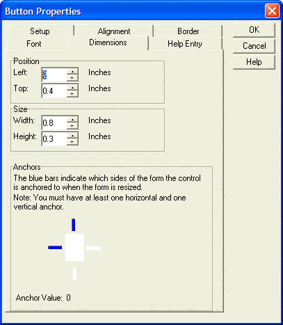
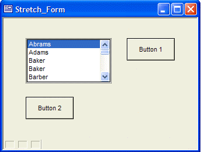
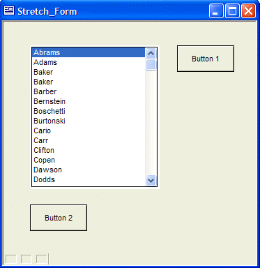
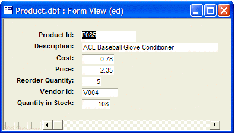
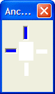
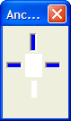
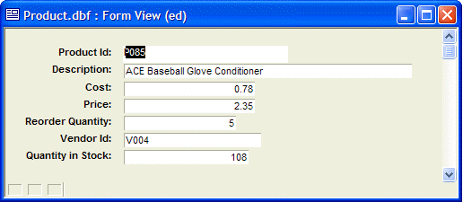
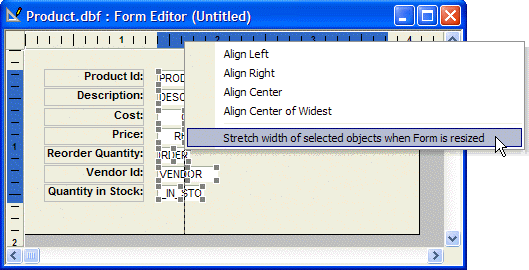

Objects that Resize with the Form
Alpha Anywhere allows you to stretch and move form objects as the form is resized. Now you can allow end users to resize forms to increase the size of form fields. The key benefit of this feature is that you can create forms that will look well designed regardless of the screen resolution (e.g. 800 x 600 or 1024 x 768 pixels).
Setting Anchor Properties in the Properties Dialog Box
You can individually set the anchor properties of an object by right clicking on it in the Design mode of the Form Editor, then clicking Properties ... > Dimensions and turning anchor points on and off.
 Note : The form's Window properties must have the following two settings
in the Size area.
Note : The form's Window properties must have the following two settings
in the Size area.
Width = Use Form's Width
Height = Use Form's Height
Make sure that The effects of anchor selections on an object are listed below:
|
Anchors Selected |
Effect When Form Resizes |
|
Left, Top |
Unchanged |
|
Right, Bottom |
Moves right and down |
|
Right, Top |
Moves right |
|
Left, Bottom |
Moves down |
|
Left, Right, Bottom |
Stretches horizontally and moves down |
|
Left, Right, Top |
Stretches horizontally |
|
Right, Top, Bottom |
Stretches vertically and moves right |
|
Left, Right, Top, Bottom |
Stretches horizontally and vertically |
There must always be one vertical (top or bottom) and one horizontal (left or right) anchor point turned on.

The following before and after pictures show the effect when the list box is anchored to all sides of the form, and the buttons are anchored to the right and bottom sides of the form.

Note how the space between the buttons and the list box is constant.

Setting Anchor Properties Interactively
After switching to Design view, clicking the Stretch icon displays the Anchors toolbar. By default, an object is anchored to the top and left (as indicated by the blue bars). Clicking the white bars on the right or bottom anchors the object to the right or bottom, causing it to stretch as the form is resized.
The following picture shows a form in its original format.

After selecting the text fields on the form above, the following two images show how to anchor them to the right edge of the form.
 
Before and after anchoring to the right edge of the form
Now, when the form is stretched, as the next picture shows, the selected form objects are resized.

Another Technique
Another technique to make an object stretch is available by right clicking on the top or horizontal ruler.

Note the vertical line that shows which elements have been selected. Clicking on Stretch width of selected objects when Form is resized anchors the objects to the right edge of the form. By default, these objects are already anchored to the left and top edges of the form.
See Also